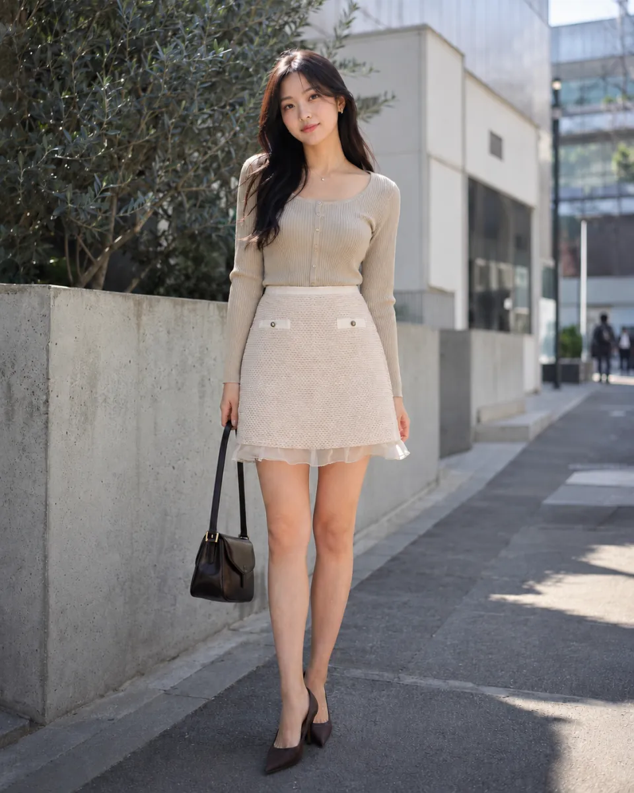

Visualización IA
Ver detalle
Visualización IA
Ver detalle
Falda Verde
$79.990
Prendas nuevas importadas desde Japón, con visualizaciones editoriales en portada y fotografías reales, etiquetas y datos verificables en cada ficha. Disponibles en Chile mediante compra coordinada directamente.
Visualización IA
Ver detalle
$79.990
 Visualización IA
Ver detalle
Visualización IA
Ver detalle
$89.990
 Visualización IA
Ver detalle
Visualización IA
Ver detalle
$99.990
$69.990
$49.990

Visualización IA Ver detalle$89.990
$109.990
$129.990
$84.990
$74.990
$54.990
$94.990
$119.990
$114.990
$79.990
$79.990
$59.990
$99.990
$124.990
$139.990
$89.990
$84.990
$64.990
$104.990
$129.990
$149.990
$94.990
$89.990
$69.990
$109.990
Prueba con un nombre o referencia, o limpia los filtros para ver la colección completa.
SanTokyo reúne una selección pequeña y personal de prendas nuevas importadas desde Japón, con etiquetas originales. La composición, talla y medidas se publican al verificarse, y el precio se define pieza a pieza.
Las fotografías, etiquetas y datos comprobables ayudan a examinar cada prenda antes de coordinar la venta directamente. El catálogo evita la lógica de un marketplace masivo y presenta la selección sin urgencia ni presión comercial artificial.
Son prendas nuevas importadas desde Japón y conservan sus etiquetas originales.
No. Cada ficha distingue las fotografías reales de la prenda física de las visualizaciones referenciales con modelo generadas con IA. Estas últimas no demuestran calce, caída, proporciones, color ni detalles.
La talla publicada debe confirmarse directamente antes de coordinar la entrega.
Sí. Las medidas disponibles y cualquier medición adicional se confirman directamente antes de coordinar la entrega.
Solo se publica cuando puede comprobarse en la etiqueta, en fotografías reales o mediante datos revisados manualmente.
Únicamente cuando la cifra de la etiqueta es legible y está verificada. No se convierte automáticamente a pesos chilenos.
No de forma automática. Mientras la prenda permanezca publicada existe una unidad, pero cualquier condición de reserva se confirma directamente.
El envío dentro de Santiago tiene un costo fijo de $3.000 y se paga previamente antes de coordinar la entrega.
No. Los $3.000 del envío no se reembolsan, aunque decidas no quedarte con la prenda durante la entrega.
Al recibirla puedes revisarla primero. Después pagas el valor de la prenda mediante transferencia bancaria o efectivo.
Sí. Después de revisarla y pagar su valor puedes probártela durante la misma entrega, y debes decidir en ese momento si deseas quedártela.
Debes devolverla inmediatamente durante esa misma entrega. Se reembolsa el valor pagado por la prenda; el costo de envío de $3.000 no se devuelve. No se trata de una devolución posterior.
Sí. La iluminación de la fotografía y la configuración de cada pantalla pueden producir variaciones; puedes solicitar una confirmación adicional.
Sigue siempre las instrucciones específicas de la etiqueta de la prenda. No existe una indicación universal segura para todos los materiales.
Escríbenos para conversar sobre disponibilidad, medidas, precio y entrega. El envío dentro de Santiago cuesta $3.000, se paga previamente y no es reembolsable. No necesitas tener una prenda elegida para comenzar.
Consultar por WhatsApp